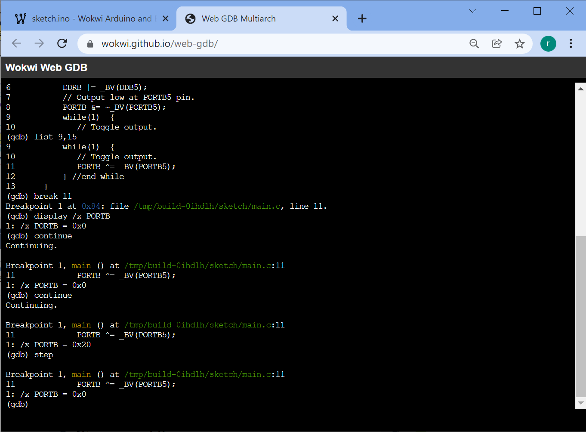

ตัวเลือกสำหรับการดีบักการทำงานของโปรแกรมในไมโครคอนโทรลเลอร์ AVR#
▷ การดีบักโปรแกรม AVR#
ก่อนอื่นมาทำความรู้จักหรือทบทวนคำศัพท์เกี่ยวกับไมโครคอนโทรลเลอร์ Atmel / Microchip AVR ดังนี้
- AVR หมายถึง ชื่อสถาปัตยกรรมของซีพียูที่ได้มีการออกแบบโดยบริษัท Atmel (ในปัจจุบันได้ถูกรวมเป็นส่วนหนึ่งของบริษัท Microchip) จัดอยู่ในประเภท RISC (Reduced Instruction Set Computer) และมีขนาด 8 บิต
- ATtiny / tinyAVR (0/1/2-Series), ATmega / megaAVR, ATxmega / AVR XMEGA และ AVR-DA / AVR-DB เป็นชื่อตระกูลของชิปไมโครคอนโทรลเลอร์ (MCU Series / Families) ของบริษัท Atmel/Microchip ที่ใช้ซีพียูตามสถาปัตยกรรมของ AVR
- ชิปไมโครคอนโทรลเลอร์ในตระกูล ATmega ที่ได้รับความนิยมในช่วงหลายปีที่ผ่านมา คือ ATmega328P, ATmega32U4, ATmega2560 เนื่องจากได้มีการนำไปใช้กับบอร์ด Arduino Uno / Nano, Pro Micro, และ MEGA2560
- On-Chip Debug (OCD) เป็นความสามารถของชิปไมโครคอนโทรลเลอร์ AVR ที่รองรับการดีบักหรือรันคำสั่งในระดับล่างของโปรแกรมโดยใช้ฮาร์ดแวร์จริง ทำไปทีละคำสั่ง หรือสั่งให้รันแล้วสามารถหยุดชั่วคราวตามเงื่อนไขที่กำหนดไว้ได้ จากนั้นจึงดูหรือตรวจสอบสถานะภายในของไมโครคอนโทรลเลอร์ได้ เช่น การเข้าถึง-เขียนหรืออ่านค่าในรีจิสเตอร์ของซีพียู (Program Counter, Stack Pointer, Status Register, I/O Registers, …) รวมถึงหน่วยความจำแฟลช (Flash Memory) และหน่วยความจำเอสแรม (SRAM)
การเขียนโค้ด (เรียกว่า Application Code) และแปลงให้เป็นโปรแกรมหรือไฟล์เฟิร์มแวร์ สำหรับชิปไมโครคอนโทรลเลอร์ AVR มีตัวเลือกที่เป็นซอฟต์แวร์ เช่น
- Microchip/Atmel AVR Studio
- GCC-AVR Toolchain
- Arduino-AVR + Arduino IDE สามารถนำมาใช้ร่วมกับ VS Code IDE + PlatformIO ได้
ปรกติการเขียนโค้ดสำหรับไมโครคอนโทรลเลอร์ เช่น Arduino ก็มักจะใช้หรือเพิ่มคำสั่งลงในโค้ด เช่น Serial.print() เพื่อส่งข้อความมายัง Arduino Serial Monitor และข้อความเหล่านั้นก็จะแสดงสถานะการทำงานในแต่ละช่วงของโปรแกรม เช่น แสดงค่าของตัวแปรในขณะนั้น เป็นต้น โปรแกรมก็จะทำงานต่อเนื่องไปไม่หยุด หลายคนก็คงใช้วิธีนี้
การดีบักโค้ดหรือโปรแกรมสำหรับไมโครคอนโทรลเลอร์มีหลายวิธีให้เลือก แบ่งเป็น 2 ประเภทหลักได้แก่
- การใช้ซอฟต์แวร์จำลองการทำงาน เรียกว่า Instruction-Set Simulator หรือตัวจำลองการทำงานของโปรแกรมตามคำสั่งระดับล่างของซีพียู ถ้าเป็นตัวจำลองการทำงานสำหรับชิปไมโครคอนโทรลเลอร์ ก็จะรวมถึงวงจรรอบข้างด้วย (Peripherals)
- การใช้ฮาร์ดแวร์อัปโหลดโปรแกรมไปยังบอร์ดคอนโทรลเลอร์และควบคุมการทำงานของโปรแกรมในฮาร์ดแวร์
ทั้งสองวิธี จะทำให้ผู้ใช้สามารถหยุดการทำงานของโปรแกรมชั่วคราวได้ กำหนดตำแหน่งหรือเงื่อนไขเพื่อให้หยุดชั่วคราวได้ ทั้งสองวิธีก็มีข้อดีข้อเสียแตกต่างกัน และก็ขึ้นอยู่กับชิปหรือบอร์ดไมโครคอนโทรลเลอร์ที่ได้นำมาใช้งานด้วย ในกรณีที่ต้องการดีบักการทำงานของโปรแกรมในฮาร์ดแวร์ ก็ต้องมีอุปกรณ์เสริมด้วย
เมื่อคอมไพล์โค้ดแล้วได้มาเป็นไฟล์ประเภท .elf หรือ .hex ถ้าต้องการดีบักการทำงานของชิป AVR ก็มีตัวเลือก เช่น
- การใช้โปรแกรมในการจำลองการทำงานไปทีละคำสั่ง (เรียกว่า AVR Instruction-Set Simulator)
ไม่ต้องใช้อุปกรณ์ฮาร์ดแวร์จริง โดยเลือกใช้ซอฟต์แวร์ เช่น
- Microchip/Atmel Studio IDE ซึ่งมี Built-in Simulator มาให้ใช้งานได้ฟรี
- "Wokwi" — Online AVR Simulator ใช้งานได้ฟรีบนเว็บเบราว์เซอร์ และใช้ avr8js ที่เขียนด้วยภาษา JavaScript เป็นพื้นฐานในการทำงาน
- "simavr" — Opensource AVR Simulator
- การใช้ฮาร์ดแวร์ในการดีบักโปรแกรม (Hardware Debugger / In-Circuit Debugger) เช่น การเชื่อมต่อกับชิป AVR และวงจรภายในที่เรียกว่า OCD (On-Chip Debug System)

รูป: ตัวอย่างการจำลองการทำงานของโปรแกรมสำหรับ AVR โดยใช้ Microchip Studio IDE

รูป: ตัวอย่างการจำลองการทำงานของโปรแกรมสำหรับ AVR โดยใช้ Microchip MPLAB-X

รูป: ตัวอย่างการจำลองการทำงานของโปรแกรมสำหรับ AVR โดยใช้ Wokwi Simulator - Online GDB Debugger
การกำหนดเงื่อนไขให้ซีพียู หรือ โปรแกรมจำลองการทำงาน หยุดทำคำสั่งชั่วคราว หรือที่เรียกว่า Breakpoints มีหลายรูปแบบ เช่น การกำหนดตำแหน่งในโค้ดหรือแอดเดรส (Address / Memory Location) ในหน่วยความจำสำหรับโปรแกรม (Program Memory) และนำไปใช้ในการเปรียบเทียบกับค่าของรีจิสเตอร์ที่เรียกว่า Program Counter (PC) ซึ่งเก็บแอดเดรสในหน่วยความจำของคำสั่งถัดไป เมื่อทำคำสั่งมาถึงตำแหน่งดังกล่าว จะได้ค่าตรงกัน ก็ทำให้ซีพียูหยุดการทำงานชั่วคราว และเรียกเงื่อนไขการหยุดแบบนี้ว่า Program Counter Breakpoint
▷ การทำงานของวงจร OCD ภายในชิป AVR#
วงจร OCD ภายในชิป AVR จะต้องเชื่อมต่อกับอุปกรณ์ Hardware Debugger เช่น Atmel-ICE Debugger (JTAGICE3) ซึ่งรองรับการเชื่อมต่อกับชิปได้หลายรูปแบบ เช่น เช่น JTAG (IEEE Standard 1149.1), debugWIRE, PDI, UPDI เป็นต้น และอุปกรณ์นี้เชื่อมต่อกับซอฟต์แวร์ เช่น Microchip Studio IDE ในเครื่องคอมพิวเตอร์ของผู้ใช้ผ่านทางพอร์ต USB
รูป: แสดงผังองค์ประกอบภายในของชิป ATmega ในส่วนที่เกี่ยวข้องกับ JTAG-OCD
รูป: แสดงผังองค์ประกอบภายในของชิป ATmega ในส่วนที่เกี่ยวข้องกับ debugWIRE

รูป: ตัวอย่างอุปกรณ์ Atmel JTAG-ICE ที่กำลังเชื่อมต่อกับบอร์ด Arduino Uno ผ่านทางคอนเนกเตอร์ ICSP
ชิป AVR แต่ละรุ่น มีวงจร OCD ที่เชื่อมต่อด้วยวิธีที่ได้แตกต่างกัน ขึ้นอยู่กับความจุของหน่วยความจำและจำนวนขา เช่น
- ATmega328P มีวงจร OCD ที่เชื่อมต่อผ่านทาง debugWIRE เท่านั้น
(สำหรับชิป AVR ที่มีขา I/O และหน่วยความจำค่อนข้างจำกัด) และต้องใช้ขา /RESET
ในการเชื่อมต่อกับอุปกรณ์ที่ทำงานที่เป็น Hardware Debugger และต้องมีการเขียนค่าบิตฟิวส์ (Fuse bit)
ที่มีชื่อว่า
DWENFuse (debugWIRE Enable) เพื่อเปิดใช้งานสำหรับการดีบัก - ATmega2560 มีวงจร OCD ที่เชื่อมต่อได้ผ่านทาง JTAG เท่านั้น และต้องมีการเขียนค่าบิตฟิวส์
OCDENFuse และJTAGENFuse เพื่อเปิดใช้งานสำหรับการดีบัก - ATxmega สามารถใช้งานวงจรดีบักภายในได้โดยใช้ช่องทาง JTAG และ PDI (Program and Debug Interface)
- ATmega4808/4809 มีวงจรดีบักภายในที่ใช้ขา UPDI (Unified Program and Debug Interface) ซึ่งแตกต่างจาก PDI ที่ใช้สายสัญญาณ 2 เส้น (2-wire Debug Interface) แต่ UPDI ใช้สายสัญญาณเพียงเส้นเดียว และใช้วิธีสื่อสารข้อมูลแบบ Half-duplex UART Protocol
วงจร AVR-JTAG-OCD มีกลุ่มของรีจิสเตอร์ที่เกี่ยวข้องในการทำงาน สามารถเขียนและอ่านค่าผ่านทาง JTAG Scan Chain เท่านั้น เช่น
- Break Status Register
- Break Control Register
- Program or Data Memory Set Breakpoint Registers
- OCD Readback Register
- OCD Control and Status Register
วงจร Break Point Unit ซึ่งเป็นส่วนหนึ่งของวงจร OCD และเชื่อมต่อผ่านทาง JTAG รองรับการกำหนดเงื่อนไขเพื่อให้โปรแกรมหยุดชั่วคราว ดังนี้
- Breakpoints in Data Memory vs. Program Memory: การกำหนดเงื่อนไขการหยุดชั่วคราวโดยดูจากแอดเดรสในหน่วยความจำแฟลช (Program Memory) หรือหน่วยความจำแบบ SRAM (Data Memory)
- Single Breakpoints vs. Range Breakpoints: การตรวจสอบเพียงแอดเดรสเดียว หรือตรวจสอบช่วงของแอดเดรส (Address Range)
การกำหนดเงื่อนไขเพื่อหยุดการทำงานของโปรแกรมชั่วคราวในลักษณะนี้ เรียกว่า Hardware Breakpoints แต่สามารถใช้ได้จำนวนจำกัด (เช่น ในกรณีที่ใช้ชิป ATmega / ATxmega จะได้สูงสุด 4 เงื่อนไขพร้อมกัน)
นอกจาก Hardware Breakpoints แล้ว ยังมีอีกรูปแบบหนึ่งคือ
Software Breakpoints ถ้าเป็นชิป AVR ก็จะใช้คำสั่ง break
และสามรถใช้ได้ไม่จำกัดจำนวนในโปรแกรม เมื่อได้ทำคำสั่งดังกล่าว ก็จะทำให้ซีพียูหยุดการทำคำสั่งต่อไปชั่วคราว
// an inline assembly instruction in C code for gcc-avr
asm("break");
▷ ตัวเลือกอื่นสำหรับดีบักโปรแกรม AVR#
"dw-link" (Arduino-based AVR-debugWIRE Debugger) เป็น Arduino Sketch ที่สามารถนำไปใช้กับบอร์ด Arduino Uno / Nano / Pro Mini เพื่อทำให้บอร์ดดังกล่าวกลายเป็นอุปกรณ์ Hardware Debugger สำหรับไมโครคอนโทรลเลอร์ AVR
"dw-link" ทำหน้าที่เชื่อมต่อกับคอมพิวเตอร์ของผู้ใช้ผ่านทาง USB-to-serial
สามารถสื่อสารไปยังโปรแกรม GNU Debugger for AVR (avr-gdb)
ด้วยโพรโทคอลที่เรียกว่า GDB RSP (Remote Serial Protocol) และอีกด้านหนึ่งของอุปกรณ์ดีบักเกอร์เชื่อมต่อกับไมโครคอนโทรลเลอร์เป้าหมาย โดยใช้ debugWIRE
(ใช้สายสัญญาณเพียงหนึ่งเส้น) อุปกรณ์นี้สามารถนำไปใช้งานกับคำสั่ง avr-gdb แบบ Command Line หรือใช้ร่วมกับ
VS Code IDE + PlatformIO
"AVaRICE" (Atmel JTAG-ICE to GDB Interfacing) เป็นอีกหนึ่งโปรแกรมที่ทำหน้าที่เป็นตัวกลางเชื่อมต่อกับอุปกรณ์ Atmel JTAG ICE mkII ไปยังโปรแกรม GDB เพื่อดีบักการทำงานของโปรแกรมในชิป AVR และสามารถนำไปใช้งานกับ VS Code IDE + PlatformIO
avr-debug
(avr-stub.h) ซึ่งได้มีการพัฒนาโดย Jan Dolinay
มาตั้งแต่ปีค.ศ. 2015 เป็นไลบรารีสำหรับ Arduino ที่ช่วยให้ผู้ใช้สามารถดีบักโปรแกรมที่ทำงานด้วยชิป ATmega328P
บนบอร์ด Arduino Uno / Nano หรือชิป ATmega2560 บนบอร์ด Arduino MEGA2560
โดยไม่ต้องมีอุปกรณ์เสริม และใช้เพียงช่องทาง USB-to-Serial เท่านั้น
โค้ด Arduino Sketch จะต้องมีการใช้คำสั่ง debug_init() สำหรับการเชื่อมต่อกับ AVR GDB Debugger
ในเครื่องคอมพิวเตอร์ของผู้ใช้ และโค้ดส่วนนี้เรียกว่า GDB Debugging Agent for ATMega328 (avr-gdb stub)
ถ้าต้องการกำหนดตำแหน่งการหยุดชั่วคราวในโค้ด ก็ให้เพิ่มคำสั่ง breakpoint()
ข้อจำกัดอย่างหนึ่งของการใช้ avr-debug คือ คำสั่งที่ใช้ Serial ของ Arduino
จะไม่สามารถใช้ได้ เนื่องจากวงจร USART ของ AVR จะถูกใช้สำหรับการดีบัก
การใช้ avr-gdb stub ใน Arduino Sketch ยังทำให้มีการใช้หน่วยความจำเพิ่มขึ้น (Memory Overhead) ประมาณ 4650 ~ 5500 ไบต์สำหรับ Flash และ 270 ~ 350 ไบต์สำหรับ SRAM
ศึกษาเพิ่มเติมเกี่ยวกับ avr-debug ได้จาก
- Jan Dolinay et al., "Advanced Debugger for Arduino", International Journal of Advanced Computer Science and Applications(IJACSA), Volume 12 Issue 2, 2021.
- Jan Dolinay, Creating and Debugging Arduino Programs in Visual Studio Code (2019): Part 1 & Part 2
▷ ตัวอย่างการใช้งาน avr-debug และ simavr สำหรับ VS Code IDE + PlatformIO#
ตัวอย่างการใช้งาน สามารถดูได้จากเอกสารออนไลน์ของ PlatformIO > Debug Tools > avr-debug เริ่มต้นด้วยการสร้างโปรเจกต์ใหม่ และเลือกบอร์ด เช่น Arduino Nano (328P, New Bootloader)
รูป: เริ่มต้นสร้างโปรเจกต์ใหม่ เลือกบอร์ด Arduino Nano (new) และใช้ Arduino Framework สำหรับการเขียนโค้ด
ลองใช้ตัวอย่างโค้ดในไฟล์ main.cpp
#include <Arduino.h>
#define USE_AVR_DEBUG
#ifdef USE_AVR_DEBUG
#include "avr8-stub.h"
#endif
// Constant
const int PWM_LED_PIN = 5;
// Global variables
uint8_t led_state = 0;
volatile uint8_t pwm_value = 0;
void setup() {
#ifdef USE_AVR_DEBUG
debug_init(); // Initialize GDB stub
delay(1000);
#endif
pinMode(LED_BUILTIN, OUTPUT);
pinMode(PWM_LED_PIN, OUTPUT);
digitalWrite(PWM_LED_PIN, HIGH );
}
void loop() {
static uint8_t index = 0;
#ifdef USE_AVR_DEBUG
breakpoint(); // Add breakpoint
#endif
digitalWrite(LED_BUILTIN, led_state ^= 1); // Toggle the LED
pwm_value = 255*(1-sin(index*PI/16));
index = (index+1) % 16;
analogWrite( PWM_LED_PIN, pwm_value ); // Update PWM output
delay(100);
}
ตัวอย่างไฟล์ platformio.ini สำหรับการดีบัก
บอร์ด Arduino Nano (328P, New Bootloader) ด้วย avr-debug มีดังนี้
ผู้ใช้จะต้องกำหนดหมายเลขพอร์ตให้ตรงกับบอร์ดที่ใช้งานจริง (ในตัวอย่างนี้ใช้ COM66)
การตั้งค่า AVR8_BREAKPOINT_MODE=1 เป็นการเลือกใช้ SRAM Breakpoints
เมื่อซีพียูทำคำสั่งหนึ่งคำสั่งจะถูกหยุดโดยอินเทอร์รัพท์และให้ฟังก์ชัน ISR ที่เกี่ยวข้องกับการทำงานของดีบักเกอร์
ตรวจสอบดูว่า ได้ทำคำสั่งมาถึงตำแหน่งที่ผู้ใช้ได้กำหนดให้เป็น Breakpoint แล้วหรือไม่ ถ้าไม่ใช่ก็ให้ทำต่อไป
ดังนั้นโหมดนี้จะทำงานได้ช้ากว่าอีกโหมดหนึ่งที่เรียกว่า Flash Breakpoints
[env:avrdebug]
platform = atmelavr
board = nanoatmega328new
framework = arduino
;debug_tool = simavr
debug_tool = avr-stub
; specify the actual Serial COM port
upload_protocol = arduino
upload_port = \\.\COM66
debug_port = \\.\COM66
build_type = debug
debug_build_flags =
-Og -ggdb -g3
debug_init_break = tbreak setup
build_flags =
-DAVR8_BREAKPOINT_MODE=1
lib_deps =
jdolinay/avr-debugger @ ~1.5
รูป: ทำขั้นตอนดีบัก (PIO > Debug > Start Debugging)
และมาหยุดเมื่อได้ทำคำสั่ง breakpoint()
รูป: ดูค่าของตัวแปรที่มีการใช้ในโค้ด main.cpp
แต่ถ้าต้องการลองใช้ simavr แทน avr-debug ในไฟล์ platformio.ini ก็ตั้งค่าใหม่ดังนี้
debug_tool = simavr
;debug_tool = avr-stub
;debug_port = ...
รูป: การดีบักด้วยโปรแกรมจำลองการทำงาน simavr
รูป: ตัวอย่างการเข้าไปภายในฟังก์ชันเพื่อทำคำสั่ง (Step Into) ขณะจำลองการทำงานของโปรแกรม
▷ กล่าวสรุป#
บทความนี้ได้นำเสนอตัวเลือกสำหรับการดีบักโปรแกรมสำหรับชิปไมโครคอนโทรลเลอร์ AVR ที่เขียนโค้ดด้วย Arduino Sketch และได้สาธิตการใช้งาน avr-debug และ simavr ร่วมกับซอฟต์แวร์ VS Code IDE + PlatformIO extension
This work is licensed under a Creative Commons Attribution-ShareAlike 4.0 International License.
Created: 2023-02-01 | Last Updated: 2023-02-02